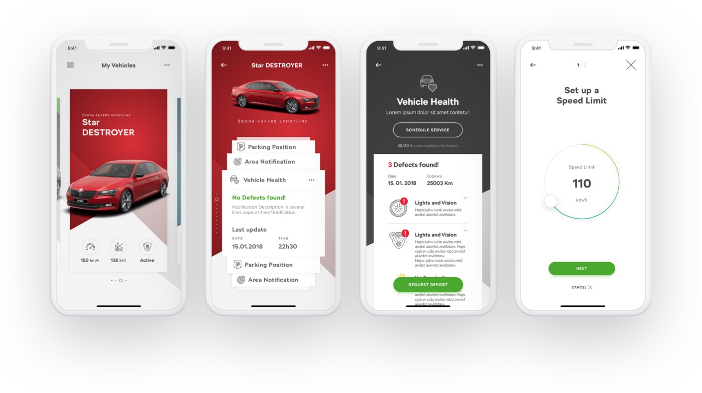
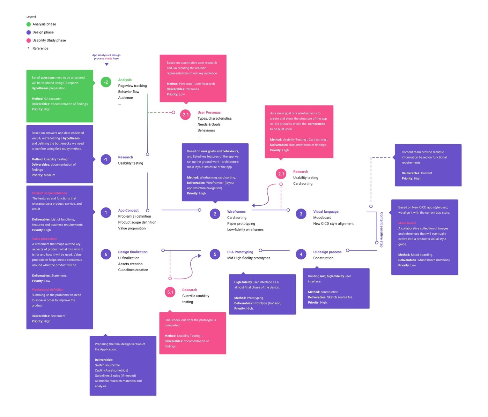
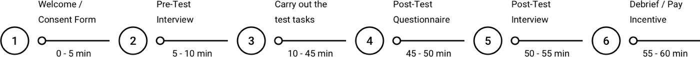

http://www.skoda-auto.com/world/connect-app

Overview
When we intend to travel from work to home or any different location, we won’t get the
logistic simply
ever. It is always desirable to have an easy affordable mode to drive.
Market & problem definition
The number of people traveling in the car keeps on rising. The Automotive industry has
been always
growing intensely. Global sales of passenger cars are forecast to hit 81.5 million
vehicles in 2018 and
it’s 11% (9 millions) of car increase comparing to the 2015. Concurrence thought the
companies and
branches are really tight and self-demanding. Just to be conquerable and to claim a good
position in the
market you need to provide a better customer experience as good as to keep fresh and up
to date into the
digital world.
The application we’re working on was outdated due to a myriad of reasons. Along with the
competition
evolution and internal problems, the following factors are the reasons for the
difficulties. So our task
was to set the train back on track and create an app that will correspond to the
existing market needs.
Goals
- Create a truly human centered car connectivity experience.
- Create competitive app that will enlarge and strengthen within existing ecosystem
of the brand and
digital strategy.
- Full app redesign and UX involvement to obtain the best customer experience.
- To help returning users retain their long-term loyalty.
Our proposal
Instead of overhauling the existing application, we will add useful features, modern and
UX
corresponding design. As a baseline for the new redesign will serve an old app
functionality that will
be carefully observed on the availability of issues and system inconsistencies.
Areas of opportunity
These are areas of opportunity that we are exploring.
Parking assistance system simplification.
Moving from, home to the work and then to work, and vice versa, how might the
experience change and
help to alleviate stress and improve the overall quality of life?
KPI dashboard optimisation.
Using KPI metrics is a way for costumers to quantify their daily based objectives,
so they can
regularly check up on their performance and determine differences.
Augmentation of users from a petty group to big lengthening the service.
As a part of the Companies ecosystem to increase the loyalty of the returning users
and provide a
reliable field for their daily based tasks.
Design & business objectives
| Define marketing campaign details. |
Prepare questionnaire about current marketing campaign,
targeting, keywords,
creatives (banners, ad copy). Questions about planned changes in the campaign.
|
| Analyze marketing campaign setup. |
Analyse the campaign and the traffic generated by it. |
| Analyze GA data. |
Identify bottlenecks of current solution. |
| Analyze Mouseflow data. |
Identify bottlenecks and interaction problems of current
solution. |
| Analyze Offline stats data. |
Get insight for redesign the process after the registration.
|
| Get results of existing in-house user research. |
Request conducted user testing data based on the previous
version of the
application. |
| Analyse existing result of in-house user research. |
Create an application analysis based on previous conduction.
|
| Conduct dealers, registered users interviews. |
Provides insight into the views and attitudes of the target user
or group
regarding the website. |
| Conduct user research. |
Define user profile and questions to an interview and request
3rd party research.
|
| Checkout process adjustments. |
Agree upon changes necessary in checkout process among all
involved stakeholders.
|
| Draft site content. |
Script, draft and understand site content needs. Filling the web
site with a draft
content. |
| W/fs, prototyping iteration 1. |
Pilot prototype with existing context. |
| Content finalization (copy, illustrations, car renderings). |
Request and align all necessary content. |
| Visual assets acquisition. |
Collect, analyze and apply all needed resources. |
| W/fs, prototype finalisation iterations. |
Having all needed context to create a final prototype. |
| Conduct user research, validation. |
Provides the final insight into the views and attitudes of the
target user or
group regarding the website. |
| UX guidelines creation, functional specification. |
Documents that specifies the functions and logic that a system
or component must
perform. |
| Add new goals to GA . |
The information and data we should be focused on, and how this
data can help us to
improve your business. |
| Define events to track. |
The events and properties we should define and align in order to
improve and track
our business goals. |
My role and team
Primarily worked as a User Experience consultant and Product design lead along with my
colleagues from
the company who were experts in a Visual design solutions.
Methodology & design process
I felt like I am in a better place to articulate existing process, and its value for
myself and
organisation, so I initiated the idea to customise the process to the actual needs and
goals we faced.
Sticked with the 4 stage set up. It is centred around gathering real data, analysing it,
understanding
the customers and continuous iterating and testing aimed at perpetual evolution.
Step: 1: User and CRO research;
- Google analytics health check
- GA data analysis
- Competitor analysis
- User research
Step 2: Strategy development, analytics & building an Ideal state;
- Personas, user journey mapping and sitemap development
- Wireframe development
- Interactive prototype development
Step 3: Performing a user validation sessions;
Step 4: Building, measuring, learning, Iterating.
- Pre-launch experiments
- Post-launch evaluation
As we had started along with analysis phase comparing and taking into the
account the baseline
date. The process is more cyclical and has many jumping in and out points, providing
more flexibility at
any stage of the mechanism.

Deep Research and Constant Testing
The first step was all about finding where and why our mobile application is leaking
visitors. This
research is crucial, as it will reveal what is working and what isn’t, indicating where
improvement is
needed most. So we deep dive into analytics supported and integrated within the existing
mobile
application to quickly validate assumptions and create hypothesis.
Google analytics health check
With the means of web analytics, we plan to investigate interactive system used by the
company in its
business strategy, and to explore the means of achievement of a maximal interactivity of
their
application using primary quantitative method of collective the information. An
analytics tracking
health check ensures that everything that needs to be measured for efficient user
behaviour analysis is
being measured and the data isn’t corrupted.
Data Analysis
As as integration with the mobile app we observed, the massive amount of data were
available in Google
analytics and Mouseflow.
Qualitative data
The focus needs to be 100% evidence-centred and be on data-based insights obtained
through deep data
analysis. Two types of data are analysed: Quantitative data and Qualitative.
| Tool |
Description |
Outcomes we received |
| Clicks & Mouseflow |
Tracking mouse clicks and mouseflow. |
Clicks map, mouse flow mapping. |
| Funnels |
Tracks user navigation from page-to-page analysing key journeys.
|
Pressure points causing drop-offs, lost sales, and poor user
experiences. |
| Heat maps |
Helping to identify trends in behavior |
Clicks, movement, scrolls, attention, and geography. |
| Scrolling |
Records of scroll up and down on the page. |
Scroll activities. |
| Session recording |
Recording of the activity from each visitor on your site. |
CCTV observation type, frustration, glitches and errors, lost
customers. |
With the means of Google Analytics, we plan to investigate interactive system used by the
company ŠKODA
in its business strategy, and to explore the means of achievement of a maximal
interactivity of their
application using primary quantitative method of collective the information.
Scope for GA
- To use our basic analytics data to supplement results data.
- To use analytics data to generate hypotheses for experimentation and
personalisation campaigns.
Set of questions need to be answered
- What is the objectives and micro, macro goals.
- Deep information about the target audience.
- Analyse how users behave at a point of flow.
- What happens immediately before/after users take a step or visit a page.
- Investigate the precise sequence that users perform different interactions.
- Isolate whether users are taking any unnecessary steps, or returning to
previous states for any
reason.
- Determine which steps in your scenario fail most often (when the users don’t
behave as we
intended).
Metrics
In-live site data in Google Analytics, paying close attention to the following
metrics:
| Acquisition metrics |
Sessions, unique sessions, % new sessions, new users |
| Behavior metrics |
Bounce rate, page / sessions, avg. session duration |
| Conversion metrics |
Goal conversion rate, goal completion |
Outcome
Documentation that serve as cornerstone for design phase implementation and reinforce
reasoning
generation. As well we created a hypothesis that are testable.
In-Person experiments
Our analysis served as a fundament to create an experiment in a real field with
potential and real
users.
The idea of product
The idea of the application is to access the most important functions of your car via
the application
on a smartphone from anywhere thereby to help and engage yourself, make the common
interaction process
more efficient.
Business case
The test will address several key questions that the design team need to answer to
for the next
iteration. Based on the Google Analytics data we’re checking, whether the hypotheses
and conclusions
were confirmed or not. Failing to answer those questions now increases the risks of
developing and
designing the wrong product.
Procedure
We have each session of 60 minutes that consist of 35 minutes of test tasks and 25
minutes of formal
procedures.

Test hypothesis
We found out that by basing hypotheses on our application’s goals we can generate
relevant,
action-oriented findings. Hypothesis were generated based on Google analytics
findings and heuristic
evaluation method outcomes provided.
User-Attitude
We think that the biggest drop-off rate for new users in a login screen is cased
by not intuitive
registration method.
User-Behaviour
We think that the biggest part of users were dropped off or jungle in the app
screens for a
significant time because of bad information architecture, It's hard for users to
find what they're
after.
Test objectives
-Do people trust the service.
-Do people confident to find a right section.
-Do people confident to navigate through the application.
-Do people confident to manipulate with controls provided.
-Do people confident enough with a registration process.
-Do people understand how to reset the user account password.
-Do people see the availability of Demo version function in the application.
-Do people understand how to find and manipulate with the Driving data section
for a specific
date.
-Do people confident enough to configure their preferences through the settings
screen.
Users and journeys
6 Participants recruited via external agency. English and Czech language speakers.
Age varies from
20-50. Sex ration is 1:1. Android and iOS ration is 1:1. All participants are
potential drivers and
car owners and not familiar with that particular mobile application. Computer and
technology
understanding level is newbies.
We have created personas that were embodied in our user journey map in order to
demonstrate and
communicate to stakeholders what we want to achieve in a vision of our project. It
helped us to
understand the behavior and how users are going to interact with our system and what
to expect from
it. Helping us to understand the functionality at a high level by understanding the
key tasks they
will want to do. It helped us to define taxonomy and interface.
Basic information
| Scope |
To test 4 imporatnt screens. |
| Purpose |
Full app redesign and UX involvement to obtain the best
customer experience.
|
| Type of testing |
Qualitative. |
| Strategy |
Between-participants. |
| Form |
Moderated, presented. |
| The context of product use |
Scripted. |
| Scenario |
Go through the process using two operation systems. |
| Time dimension (phase of DEV) |
Executive. |
| Number of respondents |
6 |
| Length of session |
60 min. |
Metrics
As the main propose of experiment was to talk with a real users. We choose a
thinking-aloud technic
keeping in mind and preventing ourselves from being affected from talking that could
potentially lead
to speed & accuracy inaccuracies.
| Qualitative / process data |
SUS (system usability scale) |
| Quantitative / bottom data |
Completion rate
Time on task
Error rates |
Environment
We were limited on time and budget. Usability testing were conducted without any
support and
full-blown lab provided. The main idea was to try imitate the natural environment
and to help
participants act naturally and feel comfortable, so we divided people by two groups
and adapted the
environment based on our desired proposal.
We’re always prefer to conduct in-person testing sessions at quit office spaces.
Based on gathered data we have built a new app concept
- Information architecture was restructured to be more easily used by
customers.
- Access points for services in different levels were created to quicken
user’s journey in the
App.
- Modularity was introduced to increase the flexibility of the App.
- Added possibility to personalise the structure of the App by user.
Methodology and Benefits
A new concept of Modularity is proposed for the app in order to fulfil the
requirement of
adaptability for possible future merge of other ŠKODA apps. On this proposal we
opted to use the
concept of Modularity. By definition Modularity is the use of small units,
modules, which are
created and designed independently, and afterwards assembled into systems. This
concept allows the
creation of various different systems using the same modules.
Benefits
User can easily access controls and key info about service on each screen level.
Each service might
contain several modules and many customization options. In case of adding new
service, it fits in
modular system without impact on overall structure of the app. This structure
allows to add as many
services and sections as necessary. One service might have several entry points.
From each level of
the app as well as from different sections, e.g. Map/Locations section and
Garage/Vehicle section.
Information Architecture
Based on different inputs mentioned in analysis phase we decided to restructure
the whole
information architecture concept of the app. Our main goal was to group services
of the app in a
more intuitive and logical way. We rearranged the settings into Main Settings
(related for the
entire app) and service related settings. Now they appear in relevant context
which improves
usability. One of the key findings from usability testing was that different
types of users searched
functionalities in different ways. This inspired us to create several entry
points for each service
(explained in section Modularity).
Improvements of UI design, Wireframes
On hand-drawn wireframes we sketch optimised User Flows and reformulate previous
version problems
in new UI patterns. These improve functionality, hierarchy of the content, some
logics,
accessibility and behaviour of features. Also we keep in mind that each screen
should be as simple
as possible, to make it understandable.
Design concept achievements
As part of the design we also aligned all the branding, creating a new look and
feel for the app
that reflected the SKODA’s brand, but was completely new to the client. Luckily
they loved it! The
final stage was consumer testing. And again, we were positively surprised.
Regardless of age or
technical ability, everyone could complete simple operations. Now, less than one
year after its
launch, SKODA Connect app. has doubled the usage.
Project Influencer testimonials
Robert Ehlers. Senior Manager | User
Experience Design lead | Accenture Interactive.

“Vlad is a great UX Designer with profound knowledge in different areas of
UX. From research to prototyping and user testing he leverages his at the
same time analytical and creative mindset to develop solutions that create
string value for the user and the business.
He's an inspiring role model and mentor for junior colleagues. I was glad,
to have him in the team.“